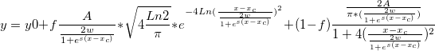

最終更新: 2018/07/29
ピークアナライザダイアログの「ピークフィット」のページにある結果: レポート構成の設定: ピーク属性のピークの重心の設定が主な原因で、このように遅くなります。このオプションは、デフォルトで選択されています。組込ピークフィット関数では、解析してピークの重心が計算されます。ところが、ユーザ定義関数ではこの解析解がないため、ピークの重心を数値計算するためフィット処理が遅くなります。
また、ピークフィットページにある結果: レポート構成の設定: ピーク属性のピーク面積にも遅くなる原因があります。Originでは、解析領域の計算に、ゼロモーメントを使っているため、時間がかかってしまいます。
このフィット処理のスピードを上げるには、ピークアナライザにあるピークの重心とピーク面積のチェックを外します。このようにすると、とても速くなります。ピークの重心とピーク面積の解析解が分かっている場合、FDFファイルにセクションを手動で加えることができます。例えば、以下のフィット関数を試してみてください。 
ピークの重心とピーク面積は、それぞれ、x_cとA になります。FDFの最後に、以下のセクションを追加できます。
[Moments] mz0 = A mz1 = xc mc2 = N.A. mc3 = N.A. mc4 = N.A.
| Notes:ピークのプロパティ内で、ピークのゆがみ、 ピーク過剰, 3次モーメント、 4次モーメントでも処理が遅くなる恐れがあります。ユーザ定義の機能をお使いの際は、ご注意ください。 |
キーワード:ユーザ定義関数、遅い、ピークアナライザ、スピードアップ